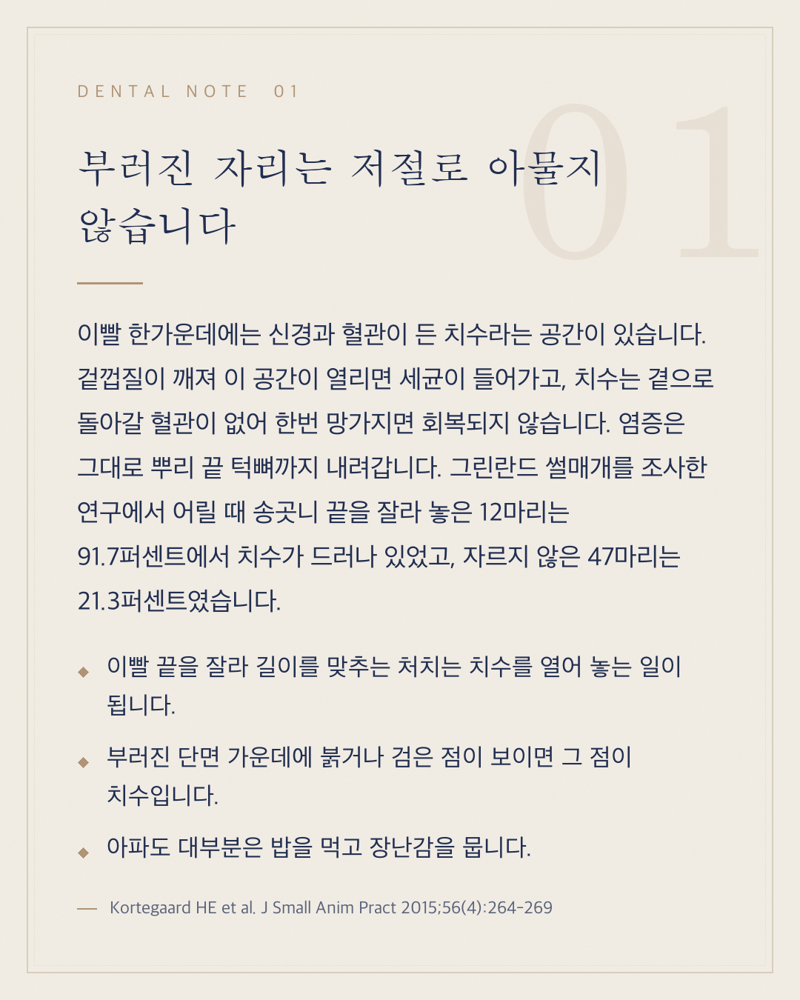
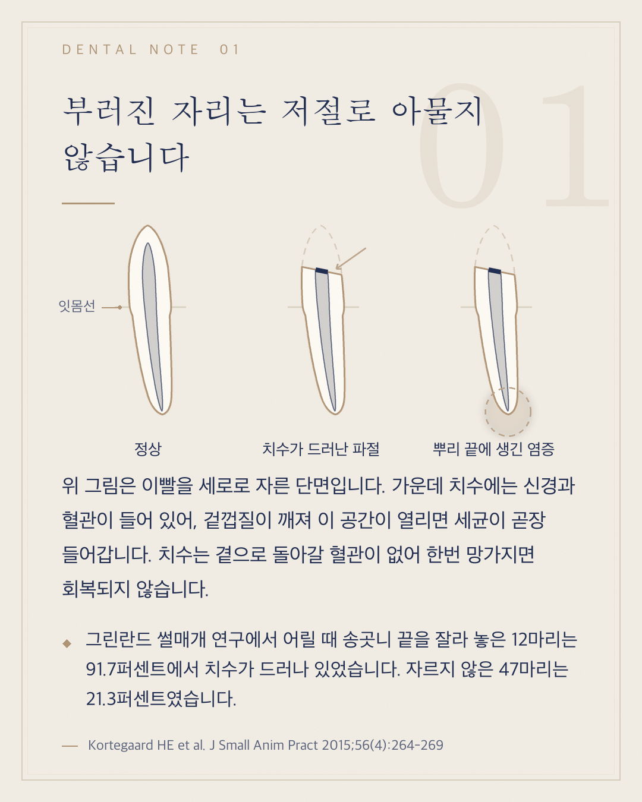
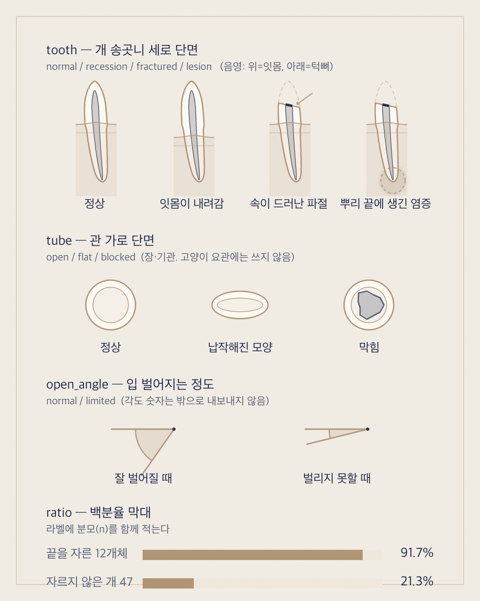

오늘 나간 근관치료 카드의 첫 장을 그림이 들어간 형태로 다시 짜 본 것입니다. 아래 왼쪽이 현재 게시본, 오른쪽이 시안입니다.


남의 그림이나 사진을 가져오지 않았습니다. 곡선 좌표를 직접 잡아 그렸기 때문에 저작권 문제가 없고, 주제에 맞춰 얼마든지 변형할 수 있습니다. 선은 카드에 쓰던 골드, 강조는 네이비 한 색만 써서 기존 디자인을 그대로 따릅니다.
비율은 실측 자료에 맞췄습니다. 치관 높이 대 치경부 직경은 1.97로 비글 송곳니 실측값 1.98과 같고, 치수강은 성견 기준(치경부에서 치아 폭의 0.28)으로 그렸습니다. 뿌리가 뒤로 휘는 것과 가장 굵은 부위가 잇몸 속에 있는 것도 반영했습니다.
그림을 매일 새로 그리면 검증을 거치지 못한 채 나가게 됩니다. 그래서 검증을 마친 그림만 등록해 두고 주제에 맞는 것을 골라 쓰는 방식으로 바꿨습니다. 등록된 네 가지는 아래와 같고, 맞는 것이 없는 날은 그림 없이 나갑니다.
